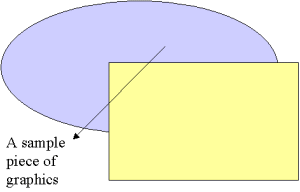
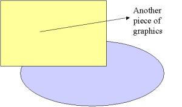

LENO Tutorial DemoKurt Nørmark
Department of Computer Science, Aalborg University, Denmark
| | | We have now started the real authoring process. |
We did this by M-x leno-insert-point, or from the LENO Emacs menu: ' Insert Point ' |
| | - This is an item
- We made it with M-x leno-insert-items.
- The leno-insert-items prompts us for the number of
items and the number of subitems
|
It is also possible to make the item from the Emacs LENO menu,
using 'Insert items' or 'Insert simple items'. |
| The concept programmatic authoring: By programmatic authoring we mean authoring of documents
via use of programmaing programming expressions | | In LENO we use programmatic authoring. |
| | | LENO | | Latex | | Programmatic authoring in Scheme | | Authoring in a TeX language |
|
| Figure. The first image - the most basic form of the image clause.
The first-image.gif file must be located in
the graphics and graphics/small directories. | |  |
| Figure. Another graphics example using the image clause.
In this example we use a few attributes of
the image mirror function. | |  |
Program: The negate function. This function is really from the SchemeDoc part of the LAML tutorial.
| |  |
Program: The fac function. This is the classical recursive edition of fac.
| | ;; Calculate the factorial of n.
;; .parameter n An integer
;; .pre-condition The integer must be non-negative.
;; .returns n!
(define (fac n)
(if (= 0 n) 1 (* n (fac (- n 1))))) |
|
Program: The fib function. This is the classical recursive edition of fib, which is very time consuming.
| | |
LENO Tutorial Demo
Course home Author home About producing this web Previous lecture (top) Next lecture (top) Previous lecture (bund) Next lecture (bund)
Generated: November 14, 2011, 09:22:44